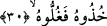

tasallut ve tesiri, daha çok müminlerin hikmet ve ilim ehli olanlarına mahsustur.
Âyette yer alan “heleke annî sultaniyeh” ifâdesindeki “sultan” kelimesi ile
yeryüzündeki sultanların kasdedilmiş olması ihtimâli de vardır. Buna göre âyet-i
kerîmenin mânâsı; “Benim mülküm, insanlar üzerindeki hâkimiyetim ve otoritem yok
oldu. Ben artık fakir ve zavallı bir insan olarak kaldım.” Ya da; “Sığınacak olduğum
huccetimi; yâni delilimi kaybettim” demektir. Nitekim İbn Abbas (r.a.) âyette yer alan
“sultâniyeh” kelimesini bu şekilde anlamıştır. Ona göre âyetin mânâsı; “Dünyada iken
insanlara karşı ileri sürmüş olduğum huccetim yâni delilim bugün burada geçersiz oldu”
demektir.
Bu son mânâ tercihe şayandır. Çünkü kitabı kendisine sol tarafından verilecek olan
kişilerin dünyada hükümdar olmaları şart değildir. Tam tersine dünyada iken bedbaht
olmaya aday ne kadar günahkâr varsa onların tamamı amel defterlerini sol taraflarından
alacaklardır.
Fakir (Bursevî)’ye göre “Malım bana hiçbir fayda vermedi” âyeti her şeyden önce
bir ta’riz olduğunu gösteriyor. Bu ta’riz yâni dokundurma, Kureyş’in ileri gelenlerinden
ve servet sâhibi olanlarından Velid ve benzeri kimseleredir.
Âyetin mânâsının; “Bugün gücüm ve âletler üzerindeki tasallutum, kayboldu. Artık
gücümü ibâdetler sahasında kullanmaktan âciz hâle geldim” şeklinde olması da
mümkündür. Çünkü her bir kişinin -dünyada iken- kendi nefsi, malı ve organları
üzerinde bir otoritesi vardır. Ancak kıyâmet günü bu elinden çıkıp gidecek, kendi
nefsine herhangi bir fayda sağlamaktan âciz olacaktır.
30. Onu yakalayın da, (ellerini boynuna) bağlayın;
Allah o gün, kendisine azap etmekle memur olan cehennem zebânîlerine: “Onu
yakalayın da (ellerini boynuna) bağlayın,” kendisine hiç mühlet vermeyin, diyecektir.
Yâni âsî olan kişiyi Rabbi için yakalayın, diyecektir. Bir başka ifâdeyle; o âsînin iki
elini boynuna bir bağ ve demir ile bir araya getirin; bağlayın, diyecektir. Onu götürünüz,
onun cesedini muhkem sarınız ki hareket edemesin, diyecektir.
Bağlayın şeklinde tercüme edilen “ğullû” kelimesi, “__WORD__/ğulle fulânun” kökünden
türemedir ki mânâsı; “filâncanın boynuna ya da eline zincir vuruldu” demektir.
Arapçada bu kökten türeme olarak “__WORD__/el-ğull” kelimesi, insanın elini boynuna
bağlayan ve kafasının hareket etmesine engel olan demirden bukağı demektir.
Fıkıh kitaplarında ifâde olunduğuna göre insanın kölesinin boynuna böylesine zincir
vurması mekruh görülmüştür. Çünkü herhangi bir kimsenin boynuna zincir vurmak
cehennemliklere verilecek cezâlardandır. Zamanımızın fıkıh bilgini derki: Bu zamanda
kölenin efendisi, kölesinin kendinden kaçacağı korkusunu taşıyorsa onun boynuna zincir